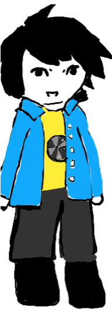

NO HOMO:
The 12 steps to being straight

1.After every sentence that may or may not sound homosexual, always make sure to add a statement of your heterosexuality, typically in the form of "No Homo!"
2.Make sure to like women. That's pretty important.
3.Remember that hating women is the gayest thing anyone can possibly do.
4.Have a bro. The cooler, the better.
5.Love that bro, but in a brotherly way. Hence the title "Bro."
6.If you wind up making out with that bro due to unforeseen circumstances, tell him "No Homo" so he knows the deal.
7.Never, ever come out of the closet. If you find yourself in a closet, you’re stuck there for good, unless you can find a way out of the closet without exiting the closet.
8.Study this song closely.
9.Study this book extensively.
10.Always use a really big and intrusive font. You must assert your dominance that way.
11.Mike and Carl are two of the straightest names I've ever heard.
12.The number 12 is the straightest number possible. Don't ask me why, it just is.